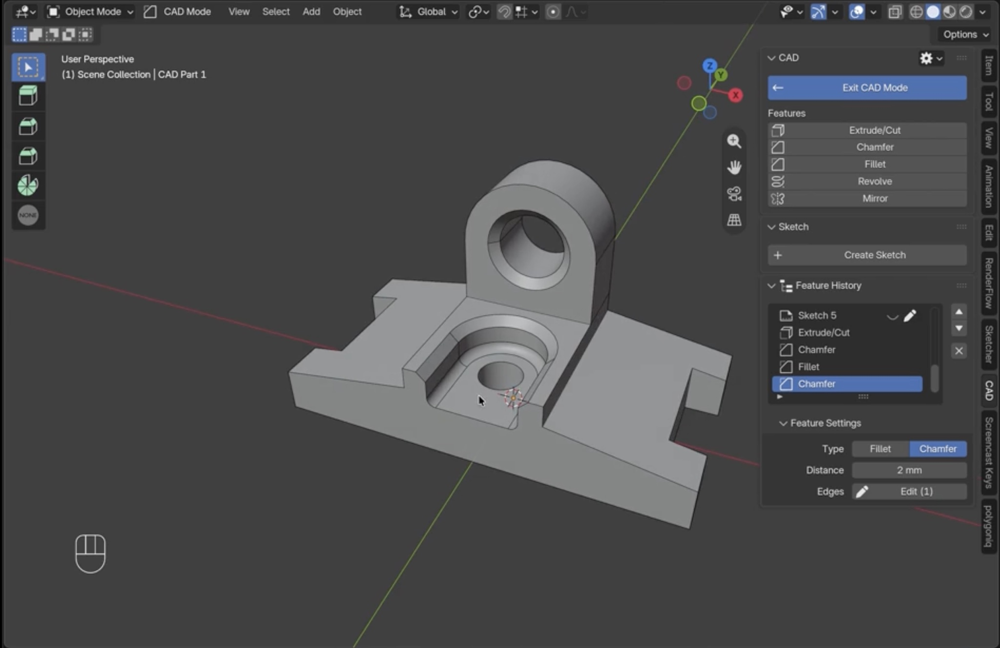

Blender addon · Early access
Parametric CAD that feels like Blender.
Sketch, extrude, fillet and export STEP without leaving Blender. Change any step later and the whole part rebuilds.

What makes it different
A real solid, not a mesh that looks round.
Most CAD-style tools in Blender end with a regular mesh. TrueCAD builds a true solid with exact surfaces and edges, the same kind of geometry dedicated CAD software uses.
A circle is flat faces between points. Fillets pinch, booleans leave artifacts, and the part can't go to CAD software.
A circle is a circle. Round edges are truly round at any zoom, and the part exports as STEP for printing, manufacturing or other CAD tools.
How it works
Real CAD, with no second app bolted on.
A CAD part is a normal Blender object. Materials, modifiers, rendering and animation all keep working.
Edit the past
Every operation lands in a history list that reads like the modifier stack. Change the first sketch and everything after it rebuilds.
Sketch with real constraints
Lines, rectangles, circles and slots that snap as you draw. Constrain and dimension to exact values, or leave it loose. Both extrude.
The keys you already know
Tab in and out like Edit Mode. E extrudes, Ctrl+B fillets, G R S move sketch points. Drag loosely or type a number.
Who it's for
For parts that have to fit.
Fits the first time
Brackets, enclosures and adapters with exact dimensions and true fillets, straight from a sketch.
Model and render in one file
Build it precisely, then light and render it without exporting or rebuilding anything.
No shading fights
Clean fillets and booleans. Convert to a mesh any time you want to keep going freely.
Already have STEP files? Import parts from GrabCAD, McMaster-Carr or a client as real solids, add a fillet or a cut, and export STEP again.
What's in today
Everything for sketch to solid to STEP.
One price, everything included. No tiers, and every future update is yours.
Ready to model your first real part?
Get TrueCAD ↗Early access
Stable today. Growing every update.
The core workflow is done and stable. Buy once and every future update is included. The price goes up at V1.
- Coming next
- Linear and circular patterns Next
- Sweep Planned
- Draft Planned
- Threads Planned
- Not in it
- Assemblies
- Technical drawings
- Simulation
- Linux, for now
"I'm a product designer and engineer. I wanted CAD precision and STEP export inside Blender, without switching to separate, expensive software for every simple part. TrueCAD is that tool, built around Blender's own keys and habits. I read every email."
FAQ
Questions
Which Blender versions and systems does it run on?
Blender 5.0 or newer, on Windows and Mac. Linux is not supported yet. It is the most requested platform and it is being worked on.
How is this different from other CAD and sketch addons?
Other addons help you draw the sketch, but once you extrude it you have a normal Blender mesh: a cylinder made of flat faces. TrueCAD does the sketch and the 3D part, and the result is a real solid with exact surfaces and editable history, that exports as STEP.
Is it a subscription?
No. It is a one-time purchase with lifetime access, including every future update.
Can I edit STEP files I already have?
Yes. Import a STEP file as a solid, add a fillet, a cut or anything else, and export STEP again.
Can I use it for 3D printing?
Yes. CAD parts are normal Blender objects, so Blender's own STL and OBJ export work as usual.
What happens if an operation fails?
You get a clear message and the part stays as it was. Operations run separately from Blender, so a failure cannot take your scene down.
Can I still edit or sculpt the mesh?
Yes. Convert any part to a regular mesh with one click when you are done with the CAD work. That step is one-way, so the history is dropped.
Commercial use, updates and support?
Everything you make with TrueCAD is yours to sell. Updates are free. Start with the documentation, and if you are stuck, email hello@semtip.nl.
Model your first real part tonight.
Parametric CAD inside the app you already know.
- True solids and STEP
- Editable feature history
- Every future update